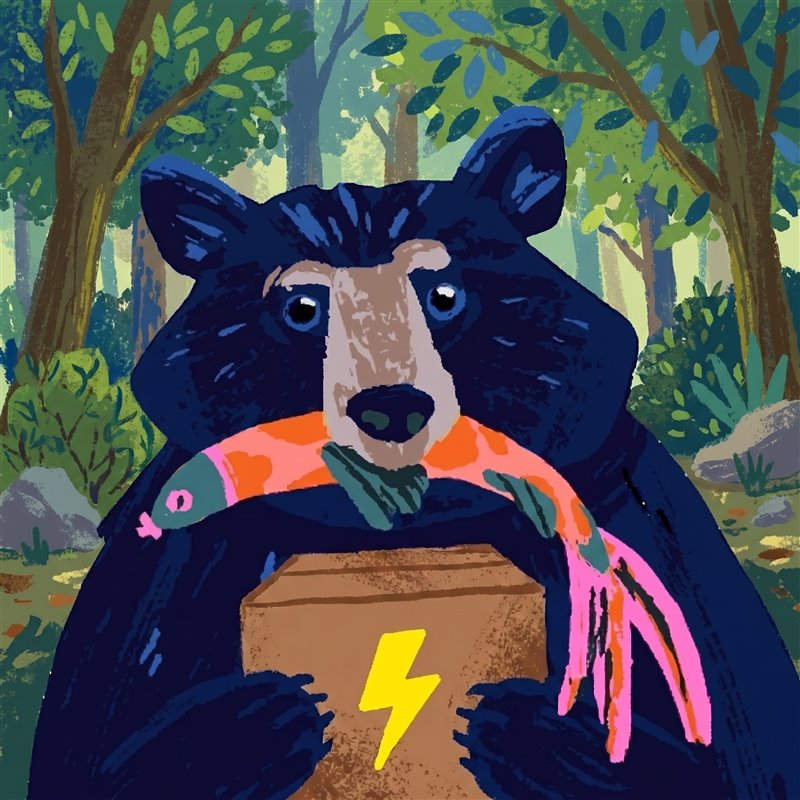

No admin. No scripts. Just packages that behave.
Voli is a fast, no-admin package manager for Windows - one static binary, portable apps, clean uninstalls, and a package can never run code on your machine.
Downloads the latest release, verifies its SHA-256, and runs
voli setup (user-level PATH). It does nothing else - read
install.ps1 first if you
like.
Fewer prompts. Zero surprises.
Not policy - architecture. Each number below holds by construction, not by good intentions.
0
Admin prompts, ever. Never touches HKLM or Program Files - everything lives under your user profile.
~250 KB
Per index update. A signed snapshot fetched over HTTP - not a git clone of a bucket.
100%
Ledgered. Every mutation is recorded, so uninstall replays each action backwards - zero trace.
Four promises, never violated.
Each guarantee is baked into the format, not bolted on after. Here is what that buys you.
Never requires admin
Never touches HKLM or Program Files. Everything lives under your user profile, and junctions need no elevation.
Zero-trace uninstall
voli uninstall x leaves nothing behind - directory, shims, env vars and PATH entries
all removed, replayed backwards from the ledger.
No scripts, ever
Install is download → verify hash → extract → shim → consented env. The manifest grammar cannot express code - a package can't run on your machine.
Signed & pinned
Every artifact is SHA-256 verified before extraction. The package index is Ed25519-signed and rejected if the signature doesn't check out.
PS> voli search ripgrep ripgrep 14.1.1 recursively search with a regex PS> voli install ripgrp ! no package 'ripgrp' - did you mean ripgrep? PS> voli install ripgrep ✓ ripgrep 14.1.1 verified · extracted · shimmed (1.2s)
Install anything in seconds.
Full-text search over a local index - instant and offline. Typo a name and voli suggests the closest match instead of failing. Every install is download, verify, extract, shim; transactional per package.
PS> voli upgrade --all ↑ ripgrep 14.1.0 → 14.1.1 · flipping current\ junction … atomic ✓ done - running processes untouched
Upgrades that never break running apps.
Each version lives in its own folder; a current junction points at
the active one. Upgrading is an atomic junction flip - a program that's already running keeps using its
files and never notices. Pins are respected.
PS> voli install oven-sh.bun env BUN_INSTALL → add to user PATH? [y/N] y ✓ set BUN_INSTALL (user) PS> voli uninstall oven-sh.bun ✓ removed BUN_INSTALL - replayed from ledger
Env vars with consent + cleanup.
When a package wants an environment variable, voli asks - it never edits your environment behind your back. And because every change is written to the ledger, uninstall takes it back out again. Nothing lingers.
The whole CLI on one screen.
Fast, predictable, scriptable. Stable exit codes and --json
on list,
search
and info
from day one.
voli install <pkg>[@version] …
Install one or more packages from the registry; pin a version with @.
Transactional per package.
voli uninstall <pkg> …
Remove a package and everything it touched - zero trace, replayed from the
ledger.
voli update
Refresh the signed package index - one small download (~250 KB), not a git
clone.
voli upgrade [<pkg>|--all]
Upgrade packages; respects pins. Running apps keep working via the atomic junction
flip.
voli list
Everything installed, with versions.
voli search <query>
Full-text search over the local index - instant and offline.
voli info <pkg>
Version, description, homepage, license and sources for a package.
voli which <bin>
Resolve a shim to the real target it points at.
voli pin / unpin <pkg>
Freeze a package at its current version, excluding it from upgrade --all.
voli cleanup
Remove non-current version dirs and stale download cache.
voli doctor
Health checks: PATH sanity, env drift, broken shims, sync-folder root warnings.
voli config get|set <key> [value]
Read or set configuration such as the install root.
voli setup / self-update
Self-install onto the user PATH, and keep voli itself up to date.
Add your app in three steps.
The registry is declarative and open. No scripts to review - just a manifest.
Ship a zip
Publish a portable archive on GitHub Releases - the same one users would download by hand.
One TOML manifest
Open a PR with a single declarative manifest: name, version, source URL, SHA-256 and the shims to create.
CI signs & ships
Registry CI verifies the hash, rebuilds the index and Ed25519-signs it. Your app is live on the next
voli update.
How Voli differs from the others.
Same job, different architecture. The rows below are structural properties, not feature-checklist marketing.
| Voli | Scoop | Chocolatey | winget | |
|---|---|---|---|---|
| Runs without admin | Always | Yes | Usually not | Often not |
| Packages can run scripts | Never - grammar can't express it | Yes | Yes (PowerShell) | Yes (installers) |
| Uninstall leaves nothing | Ledger-replayed | Mostly | Installer-dependent | Installer-dependent |
| Upgrade while app is running | Atomic junction flip | Can break | Can break | Can break |
| Index update size | ~250 KB signed snapshot | git clone per bucket | API calls | API calls |
| Index signature | Ed25519, enforced | Git trust | Feed trust | MS-signed |
| Env vars need consent | Prompted + reverted | Script-dependent | Script-dependent | Installer-dependent |
Is it safe?
Safety is built into the format, not bolted on. Every artifact is SHA-256 verified before it's extracted, and the package index is Ed25519-signed - the public key is baked into the binary, and an unsigned or tampered index is rejected outright.
The manifest grammar cannot express code, so there is no post-install script for an attacker to hide something in. Extraction is also protected against zip-slip (archive entries can't escape their folder).
Does it need admin?
Never. Voli never touches HKLM or Program Files - apps live under your user profile, PATH changes are user-level, and the junctions it relies on need no elevation. If a command ever asks for admin, that's a bug.
Can it install Chrome?
Only if there's a portable build. Voli installs portable archives - no MSI/EXE installers and no vendor scripts - so anything that ships as a self-contained zip works great (CLIs, dev tools, portable apps). Big installer-only desktop apps like Chrome aren't a fit today. That's a deliberate trade-off for the no-admin, no-scripts, zero-trace guarantees, not an oversight.
How do I uninstall Voli itself?
The same way it installs - cleanly. Voli tracks its own PATH entry and install directory in the ledger, so removing its root folder and the single user-PATH entry it added takes everything with it. No registry residue, nothing left in Program Files, because it was never there in the first place.
